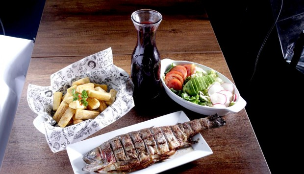
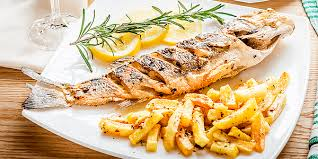
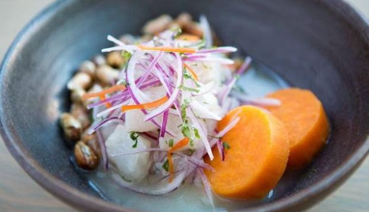
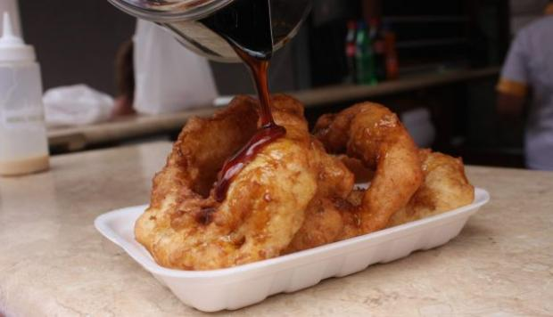

ARTÍCULOS
Pescado a la brasaPara este plato, se cuenta con la instalación de un horno estilo pollero para que obtenga ese sabor brasero que tanto gusta a los peruanos La trucha a la brasa guarda los mismos sabores de un pollo a la brasa, la diferencia es que al ser un producto más noble, ha sido puesto en medio de rejillas para cuidar que no se pase el punto de cocción. |


|
Restaurante peruano es uno de los mejores en Nueva YorkEl restaurante de comida peruana Llama Inn, ubicado en Williamsburg (Nueva York, Estados Unidos), ha sido destacado como uno de los mejores del 2016 en la versión web del diario The New York Times. Pete Wells, crítico gastronómico del medio estadounidense, realizó una lista de 10 restaurantes que visitó este año y a los que volvería a visitar. Llama Inn, que se ubica en el puesto 10, fue reseñado en febrero de este año por Wells. |


|